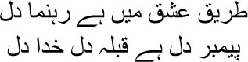
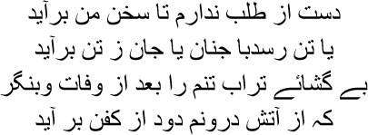
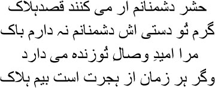

17

This heart shows the way to love
This heart is the prophet, the road, the Lord
 unirabai left me, I produced the first volume of my Urdu ghazals, making up my mind to write in Farsi from then on. The lustre of the ghazal is not bright without Farsi. But things went wrong, Manto bhai, fate began its games with me. The relationship between my heart and happiness was destroyed; secretly I bled, one drop at a time. Our relationship with joy is usually very strong, isn’t it, Manto bhai? What do we want in life but happiness? But consider the even stronger forces that can break this relationship. One night I told my heart … yes, we can speak only to our heart, it alone is our temple and our mosque, our ibaadatgah. I told my heart, ‘Give me the strength to speak, so that I can go to the Jahanpanah and tell him, I am the mysterious mirror, huzoor, polish me till I shine; poetry is born within me. I want a little rest.’ My heart chuckled. ‘You imbecile, the time for such talk is long gone. If you must speak at all, just say, “I am wounded, give me balm for my wounds; I am dead, resurrect me.”’ I turned into a hand-drawn, colourless nightingale; not even the fragrance of a hundred roses would bring song to this nightingale’s heart.
unirabai left me, I produced the first volume of my Urdu ghazals, making up my mind to write in Farsi from then on. The lustre of the ghazal is not bright without Farsi. But things went wrong, Manto bhai, fate began its games with me. The relationship between my heart and happiness was destroyed; secretly I bled, one drop at a time. Our relationship with joy is usually very strong, isn’t it, Manto bhai? What do we want in life but happiness? But consider the even stronger forces that can break this relationship. One night I told my heart … yes, we can speak only to our heart, it alone is our temple and our mosque, our ibaadatgah. I told my heart, ‘Give me the strength to speak, so that I can go to the Jahanpanah and tell him, I am the mysterious mirror, huzoor, polish me till I shine; poetry is born within me. I want a little rest.’ My heart chuckled. ‘You imbecile, the time for such talk is long gone. If you must speak at all, just say, “I am wounded, give me balm for my wounds; I am dead, resurrect me.”’ I turned into a hand-drawn, colourless nightingale; not even the fragrance of a hundred roses would bring song to this nightingale’s heart.
No, my brothers, don’t go back to sleep with such disappointed faces. Now that you have started listening to the stories of this pair of ill-fated souls, you must take the responsibility of staying till the end. But I do not want to end your hangovers from the tales of our romances just yet. And I promise that in the course of this narrative of darkness you shall get patches of light and gusts of breeze—every now and then I will tell you such qissas and hikayats, take you to such dastangos, that life will not appear to be a rock weighing you down. Yes, sit up now, for it’s stories about love that I want to tell you now. To tell you the truth, the deeper I went into dozakh during my life, the more it was the memory of love that let me survive. This life of ours—the act of being born—what is it but ishq? This is worldly love, ishq-e-majazi. And the closer we approach death, the path of divine love, ishq-e-haqiqi, opens up before us. You have to keep ishq-e-haqiqi only for the Lord. You no longer have Begum Falak Ara before you, nor Munirabai, nor Manto bhai’s Begu or Ismat, there’s only he, Alhamdulillah. But how many of us can actually tread that path? Maula Rumi did. Each of us is a moth, whirling around in the trap set by ishq-e-majazi. Have you noticed the irony, Manto bhai? Ishq-e-majazi is worldly love, it’s like loving a picture or a symbol; and ishq-e-haqiqi, which is only directed at Allah, is true love. What does this mean? We are all shadow puppets, spinning about in a symbolic forest of love. Even if we cannot take the path of ishq-e-haqiqi, even this is not insignificant, Manto bhai. It’s no mean achievement to love a picture. That alone makes this earthly life worthwhile. Some people even choose death out of their love for a picture—and does such a death not look forward to the path of ishq-e-haqiqi?
So, my brothers, let me tell you one of Mir sahib’s masnavis. If we have to talk of love, we must talk of Mir sahib over and over again. A man wounded and bent by love was like a caged nightingale to him. As he listened to its lamentations, he felt that he himself was trapped inside the cage. Have you ever read Darya-e-Ishq, Manto bhai? Why do you stare helplessly at me? Don’t worry, I know you haven’t read it. I met many people in Dilli, in Calcutta, who never read any of Hindustan’s own books. White men’s works were the last word for them. I was also quite enamoured by white skin and their civilization, their tamaddun, at one time. I even thought of them as friends, but 1857 opened my eyes. I realized that under the guise of their tamaddun, they were really here to create killing fields in this country.
No, my brothers, don’t get agitated, I will now tell you the story of Darya-e-Ishq. You’re not supposed to be listening to this story. If you’re reborn, you will carry its memory with you. However ill-fated I may have been, I do wish to be born again in this world. Do you know why? We are the Asraf-ul-Makhlakat, the finest creatures of God, Adam; even the Gibrails had to bow before us. When Iblis refused, he was thrown out of paradise. Each of us is a mirror, my brothers, in which the lord sees himself. And love is the shadow hidden deep inside the mirror, which you will never see.
Let me tell you a couple of things first. Don’t imagine that the doddering Ghalib is saying whatever comes to mind. There’s a certain protocol to telling stories too. The first rule is that you cannot tell a story without yourself in it. But in what ways can you be in a story? You talk about the tree in your garden with all your heart because you love it. You are in the story in the form of this love; you aren’t just a flesh-and-blood creature, after all, you are full of mysteries, which are part of your love for the tree. So I thought I’d explain all this. I may not have written Mir sahib’s masnavis, but as a reader I am involved with them in some way, and that is the same as being in them; this is how a poet exists in his poetry. When the falcon flies in the sky, its shadow falls on the ground; to be part of a story is like being that shadow. I’m not in the story, and yet I’m in it, in a different form.
The lover exists in your life in the same way. She is not there for you all your life. Even if she seems to be by your side, it’s not actually her. Only her shadow remains, which you love all your life. This shadow is like blood that oozes out for many, many years; like a young girl in the nude—tender, about to fall asleep.
Darya-e-Ishq is a story of someone who fell asleep this way. Was this the sleep that the boy had wanted when he loved? No one knows. The girl didn’t know either that she would have to go to her love in order to sleep. The boy was so beautiful, my brothers. As tall as a cypress tree, his heart more delicate than wax, love coursing through every vein and artery. Men such as these are born on earth only to die. Or else they’re made to slave in jail, or sent to lunatic asylums to be killed. I often dreamt of Mir sahib in his cell, where he had been imprisoned, curled up like a dog. One day Mehr Nigar appeared before him.
— You? Mir sahib murmured.
— You want to live like this?
— My fantasy, Begum. Khwab-e-khayal.
— Just for me?
— No.
— Well then?
— Mehr Nigar. A name had loved me, Begum. It’s her I live for.
— And what about me?
— You’re no one. You were afraid. You told everyone.
— They wouldn’t have let me live, Mir. They would have sent me to my grave.
— I know.
— Do you hate me?
— No. I can still see Mehr Nigar. She still lives in the palace of my heart. She came into my life a long time ago.
— Tell me that you hate me.
— No.
— Why not?
— You aren’t in my life today, Begum. Only a name remains. A name given by the lord, it’s the name that I love.
Many such names given by the lord are borne away by the river of love.
No, I will not cheat you. I’m going back to the tale of the beautiful boy who drowned to death in the Darya-e-Ishq. His name was Yusuf too. The Lord gave him a wonderful day in his life—his eye stopped at a window of a house he was passing. Who was at this window? Call her fate or call her his lover, it was her face he saw. Like a huntress, a pair of eyes stared at him, Yusuf felt as though he had fallen in love with those eyes only so that he could die. He stood transfixed in the middle of the road. The girl didn’t even deign to give him a second look; covering her face with a veil she disappeared from the window. But Yusuf was by now lost to love, and impatient. Hafiz sahib seemed to have had an inkling of what was going on in his heart.

I shall not give up on my desire if it remains unfulfilled
My heart will either reach my lover, or leave my body
When I’m dead dig up my grave, you’ll find my shroud
Covered in smoke, for the fire is still burning inside
From that day on, Yusuf remained rooted to the spot like a statue, waiting for another glimpse of the full moon. People who passed on the road looked at him in astonishment, convinced that this young man must have gone mad. Some of them felt a twinge of pain too; they asked him, what is it my friend, what sorrow has turned you to stone? Yusuf didn’t speak, only pointing to the window. One day people unravelled the mystery. Oh, this boy has lost his heart to Bilqis. I forgot to tell you, my brothers, that the girl’s name was Bilqis. So her father’s and brothers’ instinct was to have this fellow killed; later they realized that if they were to be arrested for murder they would become pariahs. Do you know what they did? They floated the rumour that Yusuf was mad. After all, there’s no responsibility attached to labelling a person mad. Is there a better method for turning a person’s life into living hell? This man is mad? Very well, spit on him, stone him, chain him, lock him in a cell. But stoning Yusuf served no purpose, for even with blood streaming from his body he remained rooted to the spot.

Even if a thousand enemies conspire to kill me
I will not be afraid if you’re near me, my friend
I’m sure I shall meet you—this confidence keeps me alive
Because you aren’t near, I am threatened by annihilation
Then Bilqis’s parents decided that it would be best to send her off to her chacha’s house across the river. Bilqis was smuggled out in a palanquin, accompanied by her trusted maid. Yusuf seemed to have scented his beloved; he began to run alongside the palanquin, shouting, ‘Have mercy on me my love, talk to me but once.’ Bilqis did not say anything, but her maid’s heart was in turmoil. Poking her head out of the palanquin, she said, ‘Wait a little longer, you will definitely meet my daughter.’ The palanquin reached the river. Bilqis climbed into the boat. Yusuf remained on the bank gazing at it; when the boat was in the middle of the stream, Bilqis’s maid tossed a single slipper into the water, shouting out to Yusuf, if you really love my daughter, bring the slipper back. The maid really did want Yusuf and Bilqis to be together; she had no idea that Yusuf didn’t know how to swim. But Yusuf plunged into the water, and was lost in its depths, gasping for breath. From her boat, Bilqis saw Yusuf die. Who was this? Was he a flower from heaven? Did he love her so much? Bilqis wasn’t able to say anything, perhaps she had felt that spring was here, there were even flowers on the boughs, but still, my favourite garden, why did you snatch him away?
Spring and garden. Why does my voice choke when I try to utter these words? When I say these two words, I feel as though rose petals are spreading their wings in my mouth. Why are these two words still shrouded in the fog of death? Bahar and bagh, spring and the garden. Why do spring and the garden only tell me about death over and over again?
Don’t worry, my brothers, I haven’t forgotten the story. But in the telling of a story, some words make me suffer so much that I wish I could take them in my arms and go to sleep. As I was saying, Yusuf died of drowning. When Bilqis had spent some time at her uncle’s house, her parents decided that since the boy had died, they might as well bring her back home. They returned on the same river. Climbing into the boat, Bilqis said, ‘Will you let me see this river, Khanum? I have never seen a river like this.’
— See it, beti, see it to your heart’s content. Once you have seen a river, you will never stop looking.
Bilqis asked many questions about the river, about who lived in the habitations on its banks, what kind of people they were, what they did for a living—she couldn’t stop asking. Eventually she asked, ‘Do you know the spot where he drowned, Khanum?’
— Why, beti?
— Is the water very deep over there?
— It’s the middle of the river.
— Will you show me?
— What do you want to see?
— I want to see how deep it is in the middle of the river.
— I’ll show you, beti. It’s so deep there, there’s such a strong current—and yet how calm it is. Only the Lord knows how.
Bilqis was mumbling to herself, which Khanum did not hear. Do you know what she was saying? —Why does he flow like the water, talking to himself? God alone knows how Mir sahib found such words and made Bilqis say them. Have you heard this sher, Manto bhai?
When the boat reached the middle of the river, Khanum called Bilqis out. There, beti, that’s the spot where Yusuf drowned. Bilqis gazed at the spot for a while. And then, before Khanum could understand her intention, she plunged into the water. The riverbed was scoured and Yusuf’s and Bilqis’s corpses were dredged out. They were lying beneath the water, holding hands. Death bequeathed on them what life did not. This, my brothers, is what it means to go from ishq-e-majazi towards ishq-e-haqiqi.
We don’t get Yusuf’s kind of martyrdom, shahadat, in our lives. Do you know why? Because we wander about, lost, all our life—lost in a forest of symbols. Only he who can bet with life itself can reach the vicinity of love. It has no name, it has no beginning or end; the beauty of this universe is infinite. What are the things we call beautiful? Wine, spring, youth, love. These are shed far too quickly. The rose whose loveliness you admire may have sprung from the grave of a beautiful woman. Just as she went to her grave one day, the rose wilted too. The song of the nightingale may hold the poetry of a dead shair, but even this nightingale dies one day. Beauty does not last long in this world, my brothers; the fragrance of the rose, the song of the nightingale and our youth all dissipate in the wind—oh, so quickly. And youth in particular, the spring of this life, dies even quicker. Only the beauty of the lord’s worldliness is indestructible.
You can see this beauty in the dust on the street, Manto bhai. Adam was born from this very dust, and all human beings merge with this same dust eventually. There’s just the one thing that I’ve realized, my brothers. It’s all right even if we cannot tread the path to the lord, but don’t let the bottle of perfume suffer. What is it, Manto bhai, why are you goggling at me? Didn’t you understand this simple observation? Obviously I’m talking of the heart. Isn’t the heart a bottle of perfume, yes or no? A pir had said as much to Mir sahib, ‘Do not break anyone’s bottle of perfume, my son. For that is where the lord resides.’ How small an object it is compared to the size of our body, and yet the ocean and the desert are both hidden in it. Only he who knows this can say, what do I care whether you’re a king or a minister—look at me, am I not a fakir?
I had wanted to take the hand of the dervish who surfaced on the Yamuna to go off into the unknown. He did not take me along. He said, wipe your mirror over and over again, the black magic of words awaits you with its fatal attraction. Then the mirror finally shattered one day, and do you know what I saw? I was still the fakir I had been born as; only a few titles bestowed by wine and women and kings had intervened briefly. How little time it took for all these to wither away.
It was well after 1857. A fakir arrived at my door, singing and asking for alms. I was stunned. This was my own ghazal. ‘Who wrote this song?’ I asked him.
— All these songs are written on the road, huzoor.
I don’t know whether I succeeded in becoming a fakir. But my song did reach the path that fakirs took, Manto bhai. It laid its head at the foot of the one who has treaded the dust. This is the garden of Rizwan.